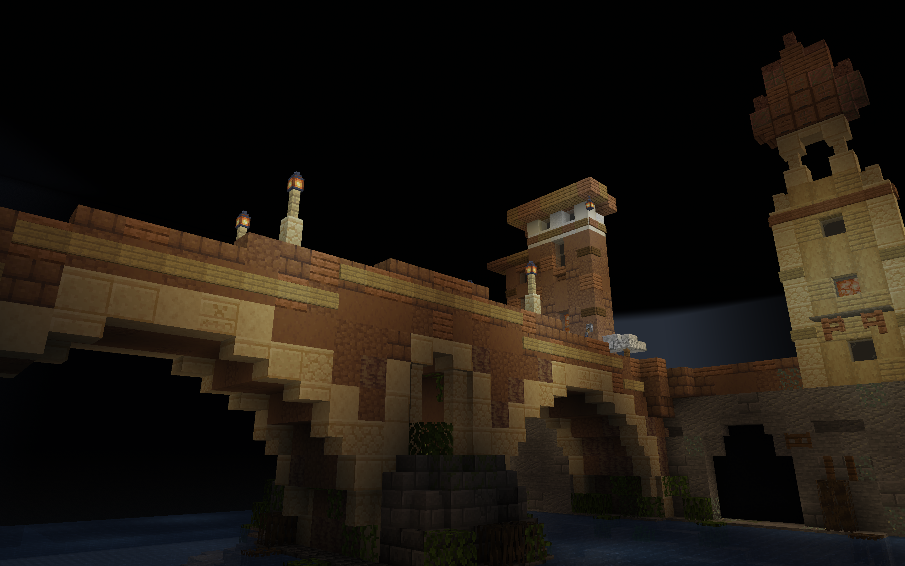

*All builds with a * have shaders enabled.
enjoy!

Skerry Island*
Abandoned Logging House Lost in Woods

Jimothy the Giant Man-Eating Spider*

Faris Wheel on Dock

eoneon - "hmm"
Mini Town at the River

Tourist Beach Shops

Tourist Beach Zoomed out
Ponte Fabricio